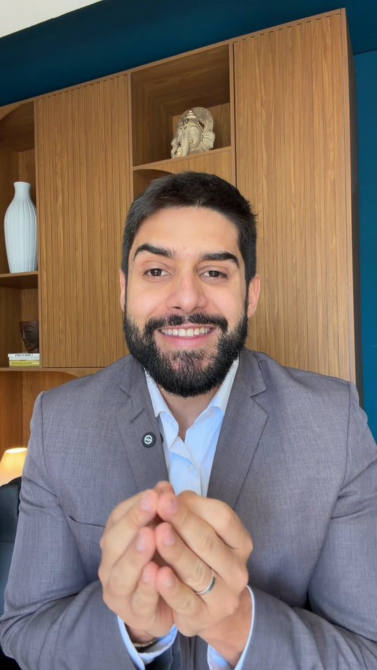
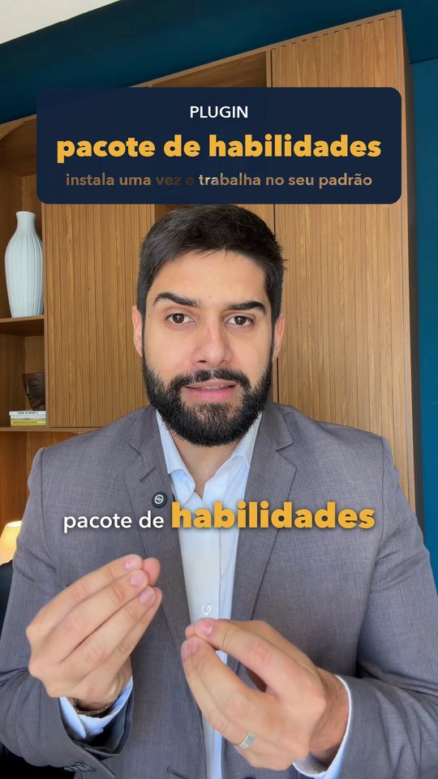
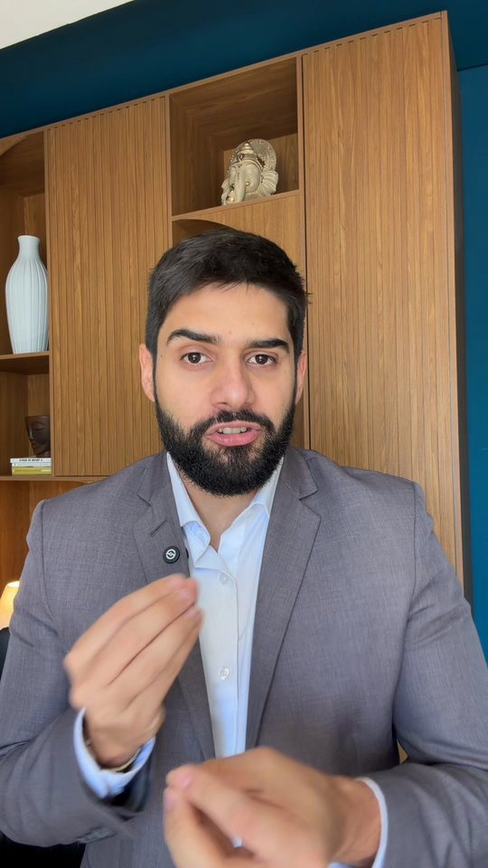
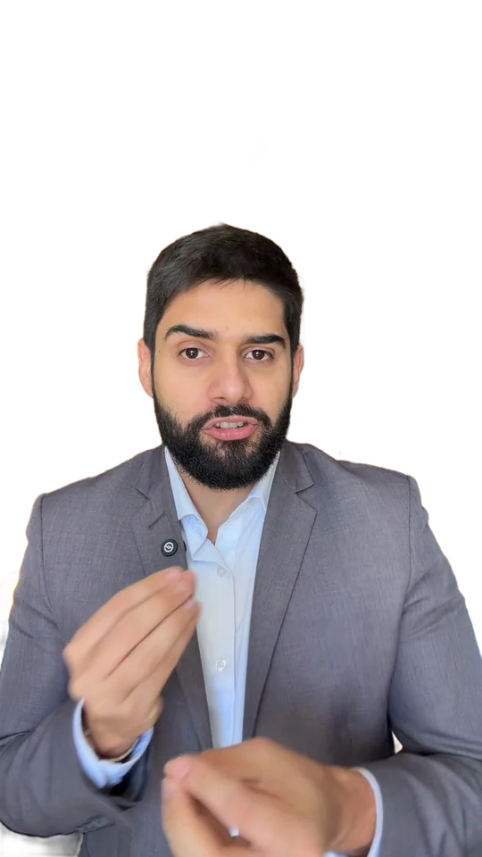
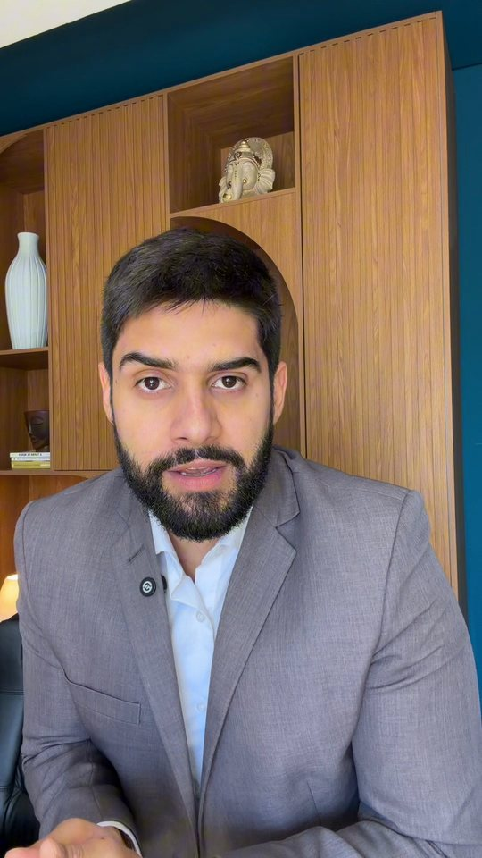
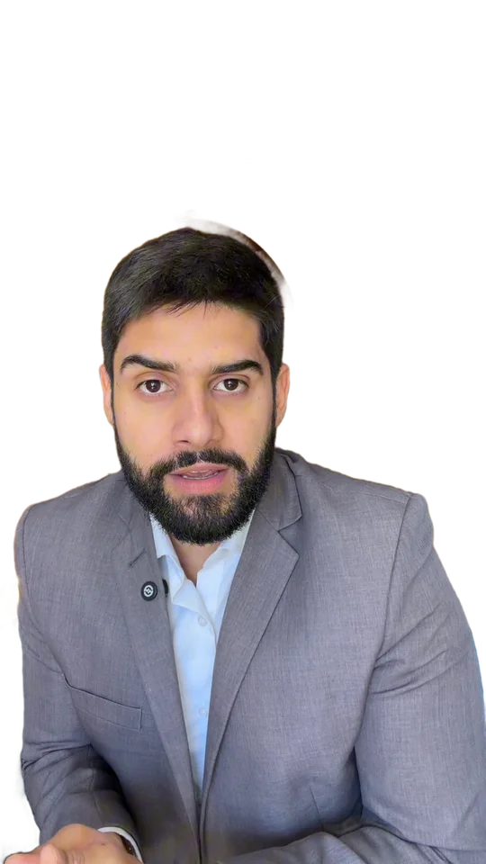
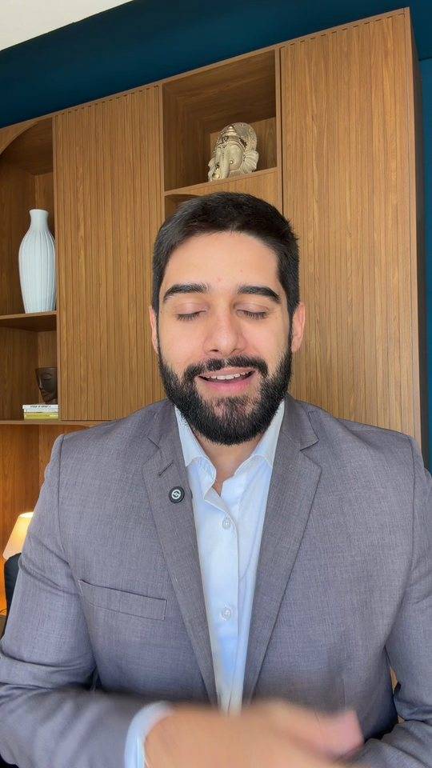
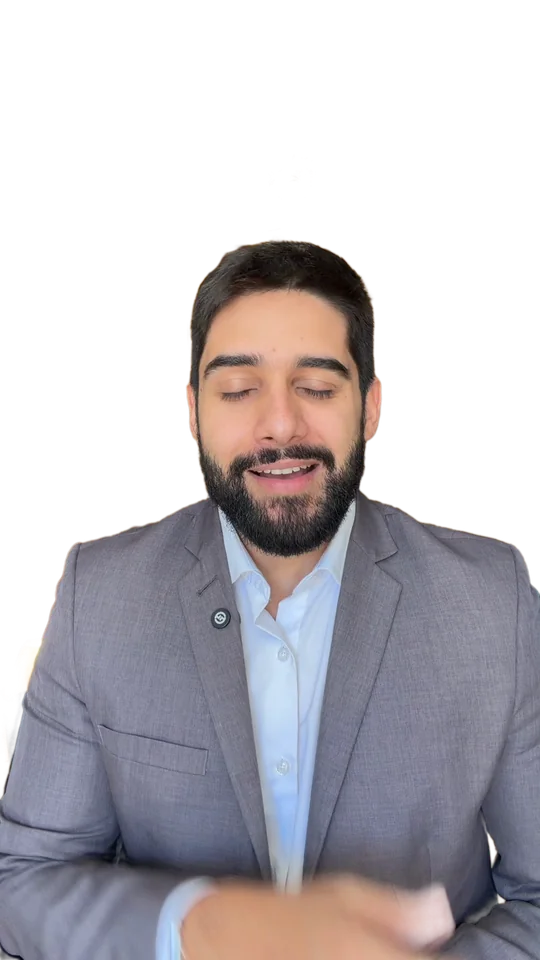
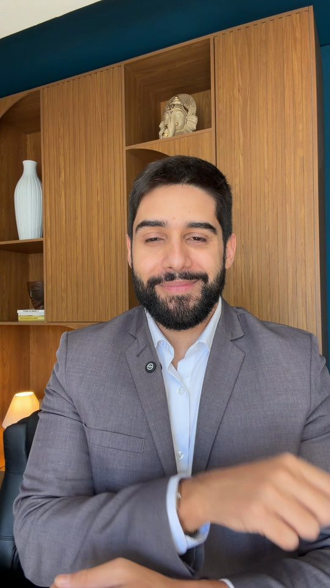
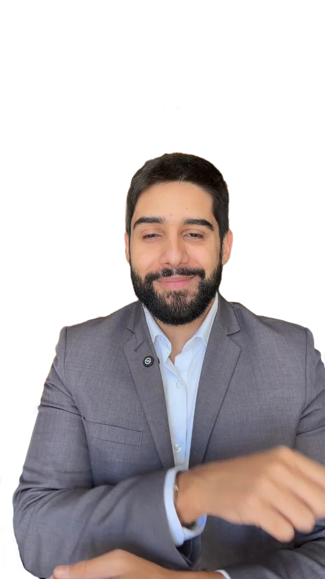

Escolha o jeito dos textos que aparecem nos seus vídeos. Os exemplos usam o mesmo vídeo em todas as famílias, para você comparar só o estilo. O texto anima como vai entrar no seu vídeo.
Com a família Institucional (cartão) ao lado para comparar.

Quando o título fala, a legenda descansa e volta depois.



Substitui a trilha em painel. Cada família marca o passo atual do seu jeito.


Substitui o carimbo "você só aprova".


Com a identificação no alto, sem cartão de perfil.


Parece editado no aplicativo do próprio celular: nada anima, o texto aparece e some no corte, a legenda vem uma palavra por vez.
A legenda acompanha a família: mesma letra, mesma cor de destaque, sem caixa.
A lista que o Claude conferiria nos quadros antes de entregar, em qualquer família.